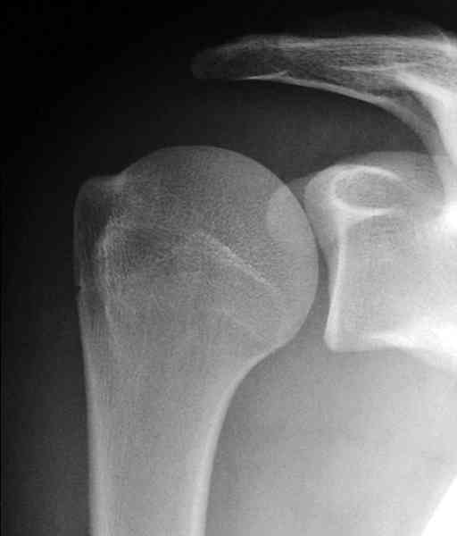

Bienvenue Sur Medical Education
Traumatisme épaule à radiographies normales
Spécialité : traumatologie /
Points importants
-
Il s'agit d'un traumatisé de l'épaule à la suite d'un choc direct ou indirect qui présente une douleur de l'épaule avec une impotence fonctionnelle plus ou moins importante. Par ailleurs les radiographies sont normales ou soi-disant normales
-
Il faut se méfier des radios normales : sont-elles de bonne qualité, sont-elles vraiment normales ?
-
Il faut réexaminer systématiquement une épaule traumatisée au bout de 8 à 10 jours
Présentation clinique / CIMU
INTERROGATOIRE
-
Recherchera le mécanisme de l'accident
-
La perception d'un craquement ou d'un déboîtement
-
La notion d'impotence fonctionnelle immédiate ou secondaire
EXAMEN CLINIQUE
Présentation clinique / CIMU
INTERROGATOIRE
- Recherchera le mécanisme de l'accident
- La perception d'un craquement ou d'un déboîtement
- La notion d'impotence fonctionnelle immédiate ou secondaire
EXAMEN CLINIQUE
_914
- - -
Examen clinique de l'épaule
Signes paracliniques
RADIOGRAPHIE
Diagnostic étiologique
DISJONCTION ACROMIO-CLAVICULAIRE
-
Il ne peut s'agir que d'un stade 1 ou 2 car il n'y a pas de déformation
-
La douleur siège électivement au niveau de l'articulation acromio-claviculaire
-
Les clichés en stress permettront de différentier les stades 1 des stades 2 (Cf. Disjonctions acromio-claviculaires)
FRACTURE NON DEPLACEE DU TROCHITER
_236 Photo Fracture non déplacée du trochiter
_237 Photo Fracture non déplacée du trochiter
- Douleur à la palpation du trochiter
- Mobilité normale mais douloureuse surtout en élévation du bras
- Refaire des radiographies au bout de 8 jours si les radios initiales ne sont pas « parlantes » (Face, 3 rotations pour dérouler l'extrémité supérieure de l'humérus)
INSTABILITE ANTERIEURE DE L'EPAULE
- Il peut s'agir d'une subluxation ou d'une épaule douloureuse par épisode d'instabilité méconnue
- Se voit surtout chez l'adulte jeune
- L'interrogatoire doit rechercher la notion de déboîtement pas toujours facile à faire préciser
- Rechercher une douleur en abduction-rotation-externe
- Les radios doivent être analysées soigneusement car il existe souvent des lésions de passage : encoche de Malgaigne et/ou arrachement osseux sur le rebord antéro-inférieur de la glène (intérêt de l'incidence de Garth, du profil glénoïdien de Bernageau et des 3 rotations de face)
_238 Photo Lésions de passage
 _239 Photo Radiographie d'une épaule de face en rotation externe paraissant normale
_240 Photo Encoche de Malaigne
RUPTURE DE LA COIFFE DES ROTATEURS
- En cas d'épaule pseudo-paralytique, le diagnostic est facile. Il faudra demander rapidement un arthro-scanner ou une arthro-IRM pour ne pas passer à côté d'une rupture de coiffe réparable
-
Dans les autres cas, on pourra retrouver :
- une douleur à l'élévation antéro-latérale (accrochage douloureux)
- un signe de Jobe positif
- une diminution de la force musculaire
-
La radio de débrouillage peut montrer :
-
un pincement sous-acromial qui témoigne d'une pathologie ancienne de la coiffe
- _241 Photo Pincement sous-acromial
- des signes indirects de conflit (densification du sommet du trochiter et/ou de l'acromion)
-
un pincement sous-acromial qui témoigne d'une pathologie ancienne de la coiffe
-
Dans le doute il faut revoir le patient au bout de 8 jours :
- s'il y a une nette amélioration, il faut prescrire de la rééducation et revoir le patient au bout d'un mois
- s'il n'y a pas d'amélioration, il faut prescrire un arthro-scanner ou une arthro-IRM pour ne pas passer à côté d'une rupture de coiffe réparable
- Les ruptures traumatiques de la coiffe sont rares chez l'adulte jeune, mais elles existent, et il serait dommage de passer à côté
_242 Photo Rupture de la coiffe des rotateurs
LUXATION POSTERIEURE DE L'EPAULE
-
Il s'agit plus, d'une méconnaissance diagnostique et d'une mauvaise interprétation d'une radio souvent de mauvaise qualité, que d'une épaule sans déformation avec des radios « normales » :
-
à l'examen clinique, on retrouve :
- une abolition de la rotation externe coude au corps (encore faut-il faire la manoeuvre !)
- une saillie de la coracoïde (chez les patients maigres)
- un bombement du deltoïde postérieur alors que le deltoïde antérieur paraît aplati
- la radio est fondamentale (cf. luxation postérieure de l'épaule) et le scanner doit être réalisé au moindre doute (rare si les Rx sont correctes)
- une réduction en urgence s'impose, sous anesthésie générale
-
à l'examen clinique, on retrouve :
-
Le diagnostic est beaucoup plus difficile lorsqu'il s'agit d'une subluxation postérieure ou d'une luxation spontanément réduite :
-
l'examen clinique oriente peu le diagnostic alors que la radiographie peut parfois montrer un aspect en double contour de la tête humérale
- _243 Photo Aspect en double contour de la tête humérale
-
c'est en fait l'arthro-scanner prescrit devant des douleurs traînantes de l'épaule qui permettra souvent de faire le diagnostic
- _244 Photo Encoche de Mac Laughlin
-
l'examen clinique oriente peu le diagnostic alors que la radiographie peut parfois montrer un aspect en double contour de la tête humérale
FRACTURE DU TROCHIN
_245 Photo Fracture du trochin
- Elle passe volontiers inaperçue par méconnaissance et également par mauvaise interprétation radiologique (surtout lorsqu'elle est peu déplacée)
- A l'examen clinique, la rotation interne est douloureuse de même que la rotation externe, la force en rotation interne est diminuée voire nulle
- La radiographie est essentielle pour faire le diagnostic (Face, profil de Lamy, incidence de Garth). Les plus grosses erreurs sont dues au fait qu'une seule incidence de face est demandée sans autres radios complémentaires
- La plupart du temps il s'agit d'une indication opératoire
CONTUSION DE L'EPAULE
- Il s'agit d'un diagnostic d'élimination
- Ne correspond à aucun des diagnostics précédents
-
Conduite à tenir :
- écharpe
- antalgiques et anti-inflammatoires
- à réexaminer au bout de 8 jours
- en général, tout s'arrange en quelques jours
Bibliographie
-
Traumatologie à l'usage de l'urgentiste. Sous la direction de Dominique Saragaglia. Editions Sauramps Médical. 2004
Auteur(s) : Jean-Jacques BANIHACHEMI, Dominique SARAGAGLIA